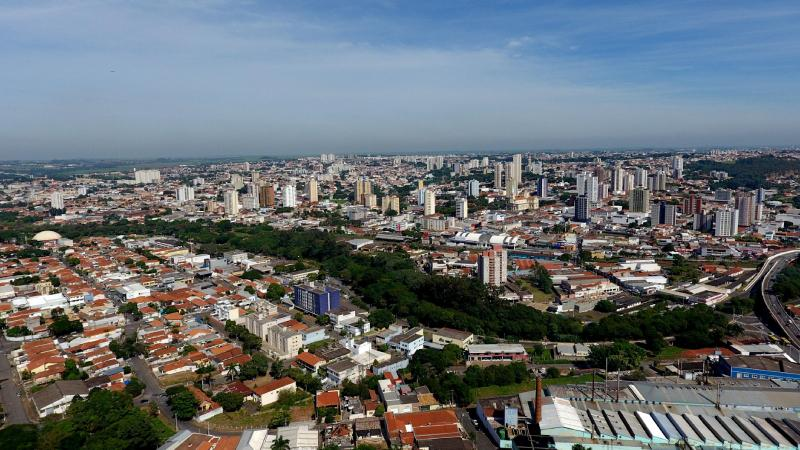
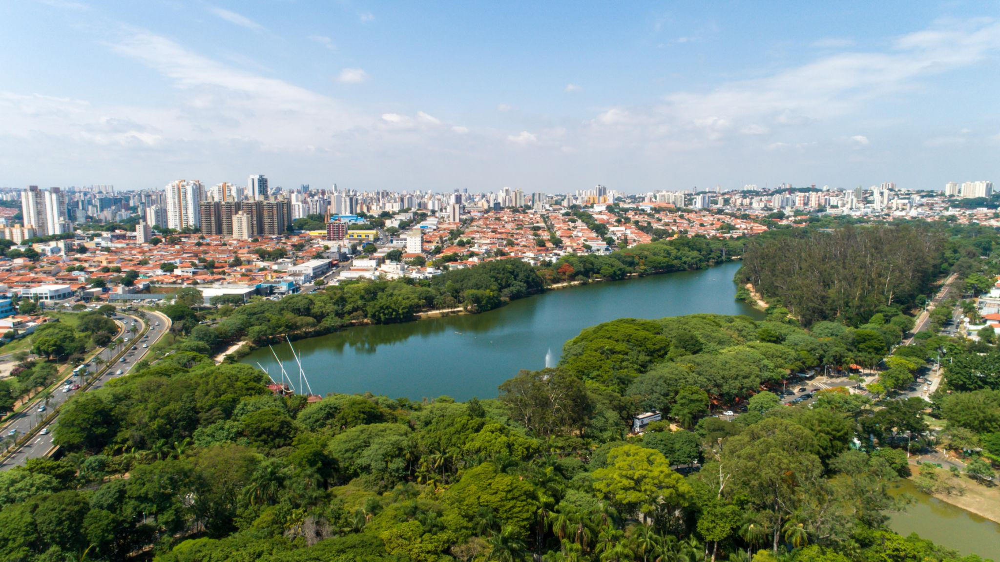
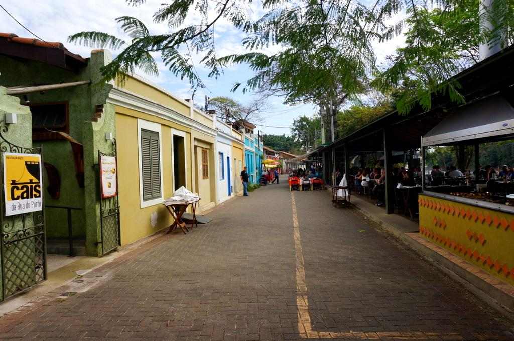
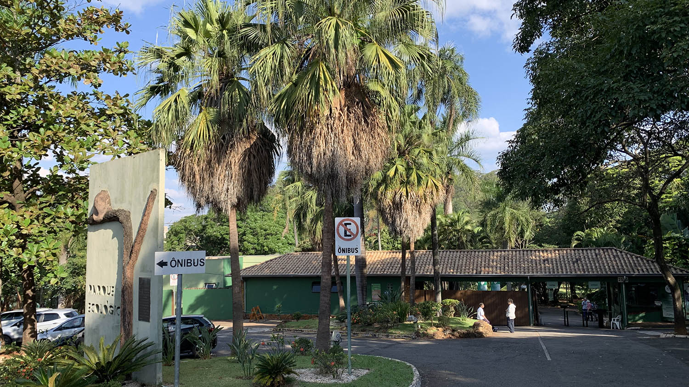
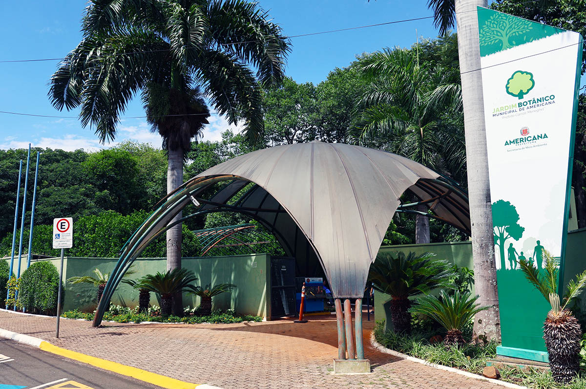

O Zoológico de Americana reúne animais de diferentes regiões do Brasil e de outros países. O passeio permite conhecer várias espécies, aprender sobre a natureza e aproveitar um espaço agradável com a família. É uma opção de lazer e educação ambiental para pessoas de todas as idades.
Saiba mais
Com cerca de 100 mil metros quadrados, o Jardim Botânico tem milhares de plantas nativas e exóticas, além da nascente do Córrego do Parque. É um lugar para caminhar, conhecer diferentes espécies e aproveitar a natureza. Também ajuda a preservar a flora regional e promove a educação ambiental.
Saiba maisA Rua do Porto é um dos lugares mais conhecidos de Piracicaba e fica às margens do Rio Piracicaba. O local tem restaurantes, construções históricas e espaços para passear. É uma boa opção para conhecer a culinária da cidade, apreciar a paisagem e passar um tempo com a família.
Saiba mais